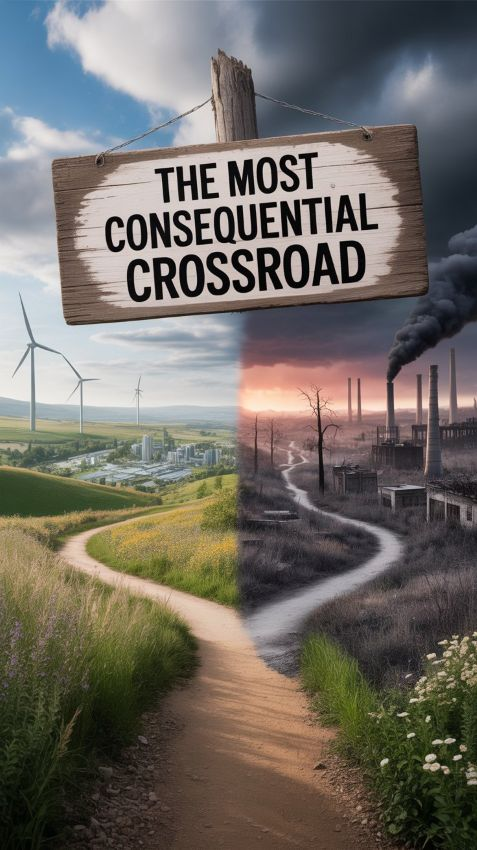

A movement for Conscious Progress
Turn shared values into public power.
V-Impact is developing a people-led platform, a voting bloc, and civic spaces for building a democratic, regenerative future.

The mechanism
Ideas matter when people can shape them.
Conscious Progress means advancing society and technology deliberately—measuring success by shared well-being, democratic power, and ecological health rather than growth alone. V-Impact’s proposed process is a public loop, not a finished answer.
The work in front of us
From broad vision to material commitments.
The current Platform of Conscious Progress is a founder’s draft, not a member-approved platform. It proposes a shift toward “multi-metric capitalism,” but key positions remain to be made concrete through accountable public work.
Choose your next step
Participation should have a visible consequence.
Accountability before scale
What exists—and what does not yet.
Available now: Founder’s Draft 1.0, a free Substack membership path, an externally hosted forum, the V-Impact story, and this public website.
Not yet published: member-approved platform positions, governance and amendment rules, public impact metrics, a meeting calendar, financial reporting, multilingual editions, or a locally operated membership system.
Our standard: the site will distinguish proposals from decisions and working services from future plans. No participation count or result is claimed without evidence.